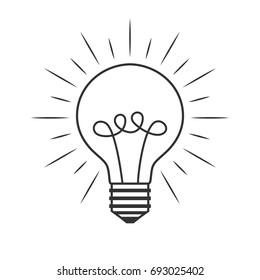

OBJECTIVE
To seek a platform to enhance my skills in a workplace where my technical knowledge can be upgraded and to play a significant role in the development of the organization. To secure a challenging position in a reputable organization to expand my learnings, knowledge, and skills. Secure a responsible career opportunity to fully utilize my training and skills, while making a significant contribution to the success of the company
EDUCATION
GRADUATION
B .Tech Informationtechnology: BannariAmman Institute of Technology, Sathyamangalam. CGPA: 8.12* (upto 6 th semester)Higher Secondary:
Noble Matriculation higher secondary school Periyavallikulam. Percentage: 91.25%Secondary School Leaving Certificate:
Noble Matriculation higher secondary school Peiyavallikulam. Percentage:97%SPECIALITIES
IDEA CONCEPT
Idea and concept are similar words which are often used interchangeably. ... Other sources simply define concept as an idea. However, strictly speaking, an idea is a rough mental construct while a concept is a more refined principle which went through a series of analysis.
EXPERIENCE
* XYZ company
Role: Full stak developer
A Full Stack Developer is someone who works with the Back End — or server side — of the application as well as the Front End, or client side. Full Stack Developers have to have some skills in a wide variety of coding niches, from databases to graphic design and UI/UX management in order to do their job well.
.
CREATIVE SKILLS
TECHNICAL SKILLS
- C
- JAVA
- PYTHON
- DBMS
- DATA STRUCTURES
SOFTWARE SKILLS
- photoshop * * * * * *
- Illustrator * * * * *
- After Effects * * * * *